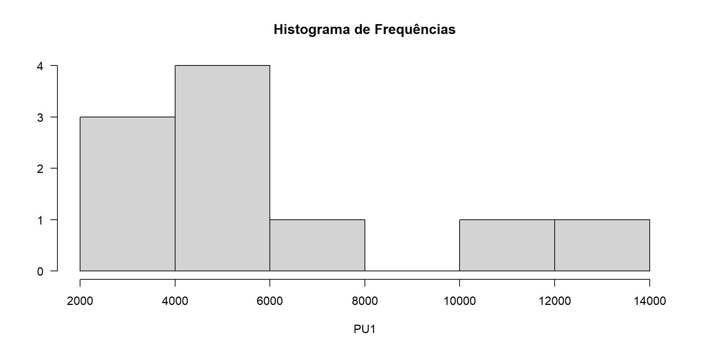
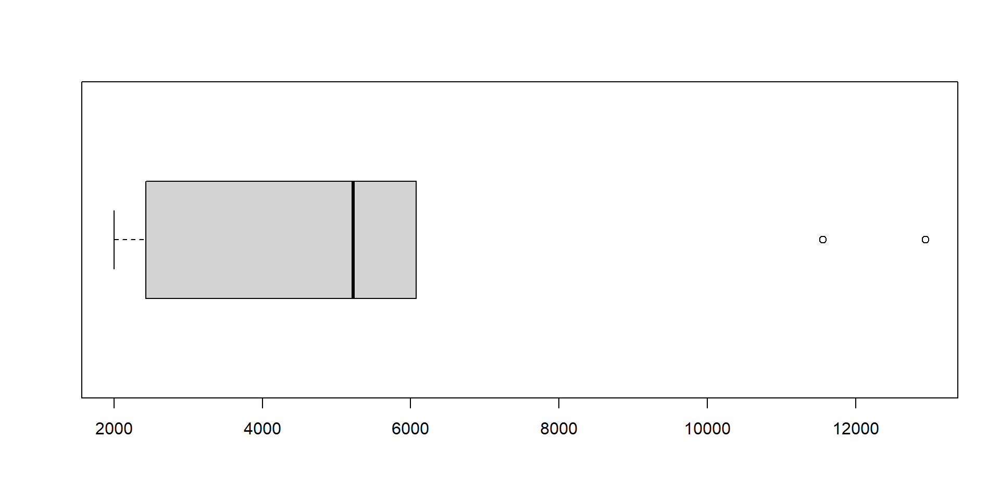
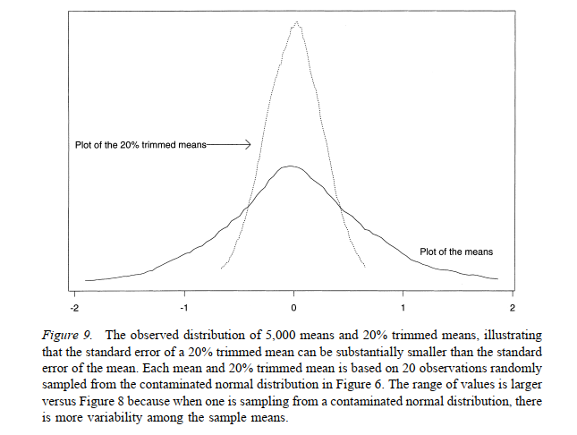
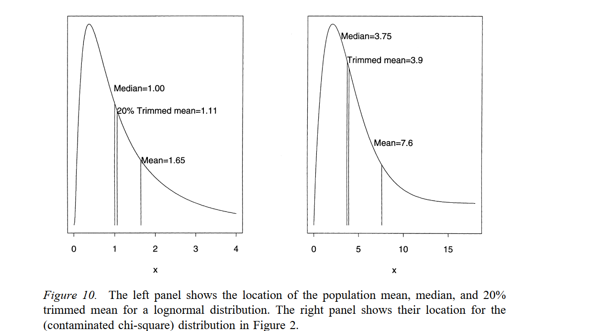
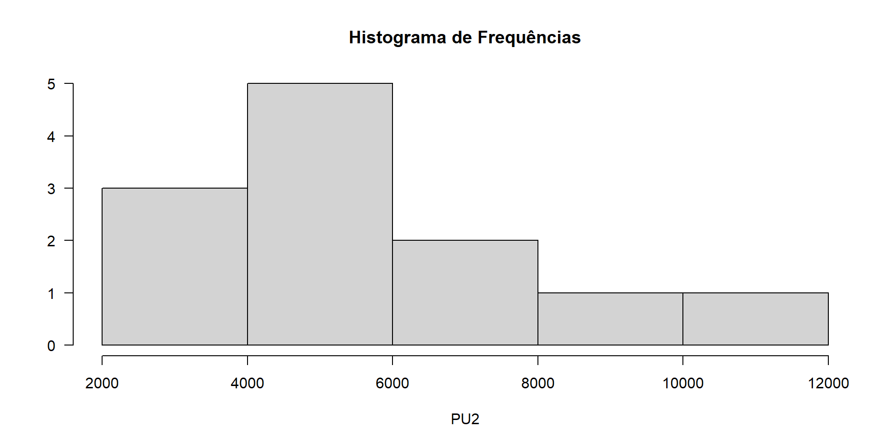
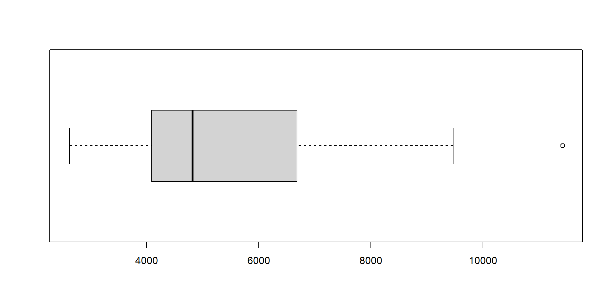
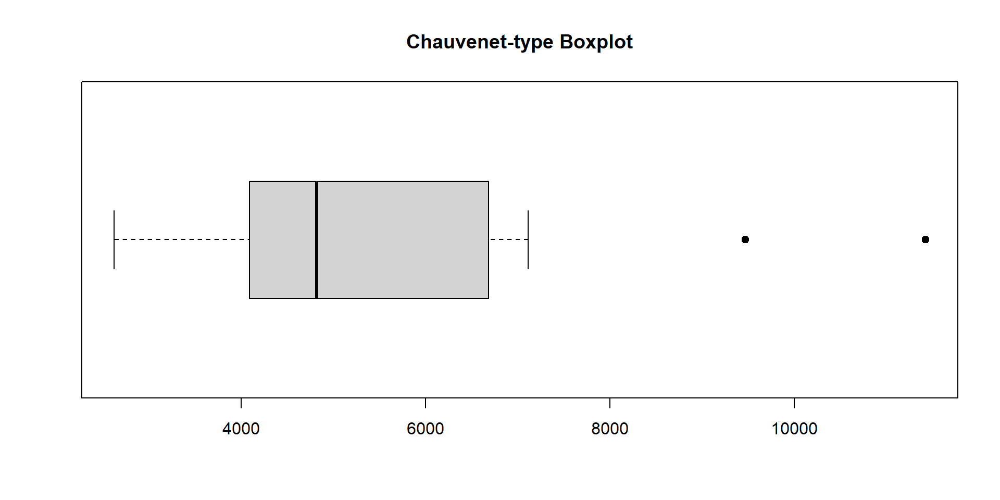
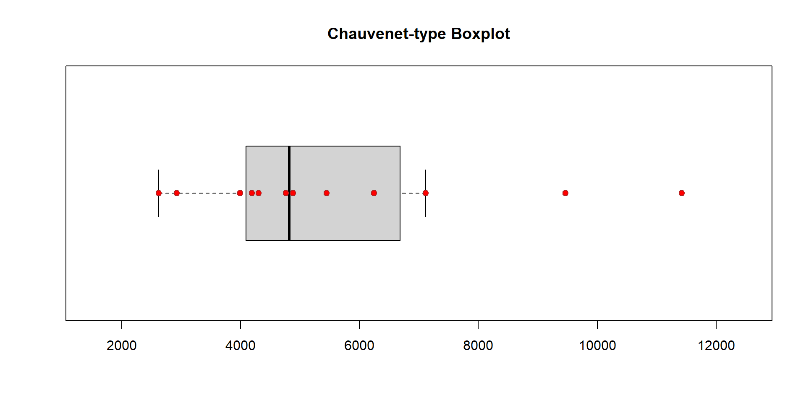

| 2430,2 | 4015 | 6071 | 2107,2 | 5790,8 | 5114,3 | 5330,8 | 11552,4 | 2004,3 | 12935,4 |
Utilização de Fatores
Outliers
Luiz Droubi
Academia da Engenharia de Avaliações
23 de julho de 2025
Introdução
Introdução
Antes da análise de fatores são pesquisados outliers nas variáveis independentes.
B.2.2 Para a utilização deste tratamento, considera-se como dado de mercado com atributos semelhantes aqueles em que cada um dos fatores de homogeneização, calculados em relação ao avaliando ou ao paradigma, estejam contidos entre 0,50 e 2,00.
Após a homogeneização, é usual que façamos uma análise dos dados homogeneizados (variável dependente) quanto à eventual presença de outliers
O critério para remover outliers varia, sendo comum a utilização do critério de Chauvenet e/ou a dos dois desvios-padrões
Após a homogeneização, devem ser utilizados critérios estatísticos consagrados de eliminação de dados discrepantes, para o saneamento da amostra. Os dados discrepantes devem ser retirados um a um, com início pelo que esteja mais distante da média. Admite-se a reintrodução de dados anteriormente retirados no processo.
Após a retirada de todos os outliers, a média dos dados remanescentes é calculada e também o desvio-padrão amostral.
É possível estabelecer um intervalo de confiança para a média, mas isto nem sempre é feito.
Problemas
Segundo R. Wilcox e Keselman (2003), quando dados na variável dependente são removidos, os dados remanescentes não são mais independentes e o erro-padrão fica comprometido
Procedimentos da estatística robusta devem ser utilizados, em lugar dos procedimentos clássicos, para evitar esse problema
Revisão de Estatistica Descritiva
Nivelamento
- A média aritmética é um estimador clássico de posição:
- \[\hat \mu = \overline X = \frac{1}{n}\sum_{i=1}^n x_i\]
- A mediana é um estimador robusto de posição:
- \[\hat \mu = \widetilde{X} =\begin{cases} x_{(\frac{n+1}{2})}& \text{se}\;n\;\text{é ímpar} \\ \frac{1}{2}\left (x_{(\frac{n}{2})} + x_{(\frac{n}{2}+1}) \right )& \text{se}\;n\;\text{é par} \end{cases} \]
In terms of power, the mean is preferable to the median or 20% trimmed mean when dealing with symmetric distributions for which outliers are rare (R. R. Wilcox e Rousselet 2023, 13).
Nivelamento
- Da mesma maneira, o desvio-padrão amostral é um estimador clássico de dispersão:
- \[\hat \sigma = s = \sqrt{\frac{1}{n-1}\sum_{i=1}^n(x_i - \overline x)^2}\]
- E o \(\mathrm{IQR}_n\) é um estimador robusto da dispersão:
- \[ \begin{aligned} \hat \sigma = \mathrm{IQR}_n &= \frac{1}{2\phi^{-1}(0,75)}(x_{(n - [n/4]+1)} - x_{([n/4])}) \\ \mathrm{IQR}_n &\approx 0,7413\cdot(Q_3 - Q_1) \end{aligned} \]
Nivelamento
- Um bom parâmetro para medir o quanto uma amostra é dispersa é o Coeficiente de Variação (CV):
- A análise do parâmetro de dispersão \(s\), por si só, não diz muito, a menos que o comparemos com o parâmetro de posição \(\overline X\).
- O coeficiente de variação faz essa comparação:
- Para a população: \[\mathrm{CV} = \frac{\sigma}{\mu}\]
- Para a amostra: \[\mathrm{CV} = \frac{s}{\overline X}\]
- Podemos também calcular um coeficiente de variação robusto \(\mathrm{RCV}\):
- \[\mathrm{RCV} = \frac{\mathrm{IQR}_n}{ \widetilde{X}}\]
Exemplo 1
Exemplo 1
- Sejam os dados da Tabela 1:
Descrição da amostra
| Var. | N | Média | Desvio Padrão | Min. | Q1 | Mediana | Q3 | Max. |
|---|---|---|---|---|---|---|---|---|
| PU | 10 | 5.735 | 3.761 | 2.004 | 2.826 | 5.223 | 6.001 | 12.935 |
- Comparar a média com a mediana!
- Perceber que a distância entre
- o valor mínimo (2.004) e o primeiro quartil (2.826)
- é muito menor que a distância entre o terceiro quartil (6.001) e o valor máximo (12.935)
- Computar grosseiramente o \(\mathrm{IQR}_n \approx 0,75(6001-2826) = 2.381,25\)
- Comparar este último com o desvio-padrão (\(\approx 35\%\) menor)!
- Calcular o \(\mathrm{CV} = 3.761/5.735 \approx 66\%\)
- Calcular o \(\mathrm{RCV} = 2.381,25/5.223 \approx 46\%\)
Gráficos


Análise de outliers
- É usual que detectemos outliers baseado em um critério.
- Por exemplo, o critério dos dois desvios-padrões
- \[r_i = \frac{X_i - \overline X}{s}; \; |r_i| > 2,0\]
- Ou o critério de Chauvenet:
- \[r_i = \frac{X_i - \overline X}{s}; \; |r_i| > d/s_{crit}\]
- \[d/s_{crit} = |\phi^{-1}(1/4n)|\]
- Por exemplo, o critério dos dois desvios-padrões
Análise de outliers
| PU1 | Deviation | Z | Outlier | |
|---|---|---|---|---|
| 9 | 2.004,30 | -3.730,84 | -0,99 | |
| 4 | 2.107,16 | -3.627,99 | -0,96 | |
| 1 | 2.430,23 | -3.304,91 | -0,88 | |
| 2 | 4.015,03 | -1.720,12 | -0,46 | |
| 6 | 5.114,25 | -620,89 | -0,17 | |
| 7 | 5.330,80 | -404,34 | -0,11 | |
| 5 | 5.790,83 | 55,69 | 0,01 | |
| 3 | 6.071,03 | 335,89 | 0,09 | |
| 8 | 11.552,43 | 5.817,29 | 1,55 | |
| 10 | 12.935,36 | 7.200,22 | 1,91 | |
| T1/Q2/T2 | 3.750,89 | 5.222,52 | 5.837,53 | |
| Mean/SD/CV/SE | 5.735,14 | 3.761,08 | 65,58 | 1189.36 |
| Med/IQRn/RCVq/SE | 5.222,52 | 2.698,93 | 51,68 | 1290.12 |
| OS Skew/Moors Kurt. | 0,29 | 2,37 | NA | |
| d/s_crit | 1,96 | NA | NA |
Mascaramento
Mascaramento
- Mascaramento ocorre quando outliers verdadeiros não são detectados
- Empoçamento ocorre quando observações regulares são classificadas como outliers
- Estes fenômenos usualmente ocorrem porque trabalhamos com estatísticas não-robustas, i.e. sensíveis à outliers
- Mesmo critérios como o critério do boxplot de Tukey, que classifica como possíveis outliers os pontos além de \(1,5\cdot \mathrm{IQR}\) dos quartis inferior e superior, estão sujeitos ao mascaramento (ver R. R. Wilcox e Rousselet 2023, 12).
- A solução é trabalhar com estimadores robustos:
- Por exemplo, a mediana (\(\widetilde{X}\)) e o desvio mediano absoluto (\(\mathrm{MAD}_n\))
- \[r_i = \frac{X_i - \widetilde{X}}{\mathrm{MAD}_n}; \; |r_i| > 2,24\]
- \[\mathrm{MAD}_n = 1,4826\cdot \mathrm{Med}|X_i - \widetilde{X}|\]
- Por exemplo, a mediana (\(\widetilde{X}\)) e o desvio mediano absoluto (\(\mathrm{MAD}_n\))
There are two common mistakes regarding how to deal with outliers. The first is to search for outliers using the mean and standard deviation (R. R. Wilcox e Rousselet 2023, 11).
Análise robusta de outliers
| PU1 | Deviation | Z | Deviation2 | Robust_Z | Outlier | |
|---|---|---|---|---|---|---|
| 9 | 2.004,30 | -3.730,84 | -0,99 | -3.218,23 | -1,09 | |
| 4 | 2.107,16 | -3.627,99 | -0,96 | -3.115,37 | -1,05 | |
| 1 | 2.430,23 | -3.304,91 | -0,88 | -2.792,29 | -0,94 | |
| 2 | 4.015,03 | -1.720,12 | -0,46 | -1.207,50 | -0,41 | |
| 6 | 5.114,25 | -620,89 | -0,17 | -108,27 | -0,04 | |
| 7 | 5.330,80 | -404,34 | -0,11 | 108,27 | 0,04 | |
| 5 | 5.790,83 | 55,69 | 0,01 | 568,30 | 0,19 | |
| 3 | 6.071,03 | 335,89 | 0,09 | 848,51 | 0,29 | |
| 8 | 11.552,43 | 5.817,29 | 1,55 | 6.329,90 | 2,13 | |
| 10 | 12.935,36 | 7.200,22 | 1,91 | 7.712,83 | 2,60 | * |
| P10/Q1/Q2/Q3/P90 | 2.055,73 | 2.430,23 | 5.222,52 | 6.071,03 | 12.243,89 | |
| Mean/SD/CV/CI_L/CI_U | 5.735,14 | 3.761,08 | 65,58 | 4.090,22 | 7.380,06 | |
| Median/MADn/RCVm/CI_L/CI_U | 5.222,52 | 2.965,05 | 56,77 | 3.222,63 | 5.930,93 | |
| HL/IQRn/RCVq | 5.222,52 | 2.698,93 | 51,68 | NA | NA | |
| OS Skew/Moors Kurt. | 0,29 | 2,37 | NA | NA | NA | |
| LF/UF | -2,24 | 2,24 | NA | NA | NA |
Análise robusta de outliers
| PU1[-c(10)] | Deviation | Z | Deviation2 | Robust_Z | Outlier | |
|---|---|---|---|---|---|---|
| 9 | 2.004,30 | -2.930,82 | -0,99 | -3.109,95 | -1,91 | |
| 4 | 2.107,16 | -2.827,96 | -0,96 | -3.007,09 | -1,85 | |
| 1 | 2.430,23 | -2.504,88 | -0,85 | -2.684,02 | -1,65 | |
| 2 | 4.015,03 | -920,09 | -0,31 | -1.099,23 | -0,67 | |
| 6 | 5.114,25 | 179,13 | 0,06 | 0,00 | 0,00 | |
| 7 | 5.330,80 | 395,68 | 0,13 | 216,55 | 0,13 | |
| 5 | 5.790,83 | 855,71 | 0,29 | 676,58 | 0,42 | |
| 3 | 6.071,03 | 1.135,92 | 0,38 | 956,78 | 0,59 | |
| 8 | 11.552,43 | 6.617,31 | 2,24 | 6.438,18 | 3,95 | * |
| P10/Q1/Q2/Q3/P90 | 2.045,44 | 2.349,46 | 5.114,25 | 5.860,88 | 9.359,87 | |
| Mean/SD/CV/CI_L/CI_U | 4.935,12 | 2.951,86 | 59,81 | 3.560,71 | 6.309,52 | |
| Median/MADn/RCVm/CI_L/CI_U | 5.114,25 | 1.629,71 | 31,87 | 2.430,23 | 5.790,83 | |
| HL/IQRn/RCVq | 4.564,64 | 2.603,01 | 50,90 | NA | NA | |
| OS Skew/Moors Kurt. | -0,52 | 0,79 | NA | NA | NA | |
| LF/UF | -2,24 | 2,24 | NA | NA | NA |
Análise robusta de outliers
| PU1[-c(8, 10)] | Deviation | Z | Deviation2 | Robust_Z | Outlier | |
|---|---|---|---|---|---|---|
| 8 | 2.004,30 | -2.103,65 | -1,23 | -2.560,34 | -1,26 | |
| 4 | 2.107,16 | -2.000,80 | -1,17 | -2.457,48 | -1,21 | |
| 1 | 2.430,23 | -1.677,72 | -0,98 | -2.134,40 | -1,05 | |
| 2 | 4.015,03 | -92,93 | -0,05 | -549,61 | -0,27 | |
| 6 | 5.114,25 | 1.006,30 | 0,59 | 549,61 | 0,27 | |
| 7 | 5.330,80 | 1.222,85 | 0,72 | 766,16 | 0,38 | |
| 5 | 5.790,83 | 1.682,87 | 0,98 | 1.226,19 | 0,61 | |
| 3 | 6.071,03 | 1.963,08 | 1,15 | 1.506,40 | 0,74 | |
| P10/Q1/Q2/Q3/P90 | 2.035,16 | 2.268,70 | 4.564,64 | 5.560,81 | 5.986,97 | |
| Mean/SD/CV/CI_L/CI_U | 4.107,95 | 1.709,04 | 41,60 | 3.253,01 | 4.962,90 | |
| Median/MADn/RCVm/CI_L/CI_U | 4.564,64 | 2.025,67 | 44,38 | 2.430,23 | 5.330,80 | |
| HL/IQRn/RCVq | 4.026,35 | 2.440,45 | 53,46 | NA | NA | |
| OS Skew/Moors Kurt. | -0,32 | 0,63 | NA | NA | NA | |
| LF/UF | -2,24 | 2,24 | NA | NA | NA |
- A média, que antes estava inflada, agora é menor do que a mediana
- A nova mediana não é mais a mediana “real” da amostra.
Estatística Robusta
Estatísticas Robustas
Existem diversas estatísticas robustas, tanto para a medida de posição, como a mediana, como para a medida de dispersão, como o \(\mathrm{MAD}_n\).
Dentre as estatísticas robustas, destacamos a média aparada, que é uma espécie de compromisso entre a média e a mediana
- Todas as observações são utilizadas para o cômputo da média, nenhuma é descartada
- Apenas uma (ou duas, no caso de amostras de tamnho par) observação é utilizada no cômputo da mediana, as outas são descartadas
- Na média aparada, descartamos uma fração menor de dados do que no cômputo da mediana.
- Por exemplo, na média aparada de 20%, \(\overline X_{20}\), descartamos 20% dos dados em cada extremo da amostra
- Na média aparada de 25%, \(\overline X_{25}\), descartamos 25% dos dados em cada extremo da amostra
Segundo R. R. Wilcox e Rousselet (2023), é conveniente utilizar a média aparada, pois o erro-padrão e os testes de hipóteses calculados após o descarte de outliers podem estar subestimados.
The second mistake is discarding outliers and applying some standard method for comparing means using the remaining data. This results in an incorrect estimate of the standard error, regardless of how large the sample size might be (R. R. Wilcox e Rousselet 2023, 12).
Média Aparada
- A média de uma amostra \(X = \{2, 4, 6, 8, 10, 20\}\) é:
- \(\overline X = (2+4+6+8+10+20)/6 = 8,33\)
- Todos os pontos são utilizados no cálculo da média, nenhum é descartado.
- \(\overline X = (2+4+6+8+10+20)/6 = 8,33\)
- A mediana dessa mesma amostra é:
- \(\widetilde{X} = (6+8)/2 = 7\)
- Ou seja, 4 dados são descartados, 2 em cada extremo da amostra, e 2 dados centrais são utilizados para o cômputo da mediana
- \(\widetilde{X} = (6+8)/2 = 7\)
- A média aparada de 20% descarta 1 dado em cada extremo da amostra (não é possível descartar 1,2 dados):
- \(\overline X_{20} = (4+6+8+10)/4 = 7\)
- Perceber que se \(X = \{-10, 4, 6, 8, 10, 20\}\), tanto \(\widetilde{X}\) quanto \(\overline X_{20}\) se manteriam as mesmas.
- Ambas as medidas são robustas
- \(\widetilde{X}\) é mais robusta, pois 2 dados em cada extremo podem estar contaminados, e ela ainda assim não se altera
- \(\overline X_{20}\), neste caso, só é robusta à contaminação de 1 dado em cada extremo da amostra.
- \(\overline X\) é sensível a qualquer ponto de contaminação!
- Ambas as medidas são robustas
Análise robusta de outliers
| PU1 | Deviation | Z | Deviation2 | Robust_Z | Outlier | |
|---|---|---|---|---|---|---|
| 9 | 2.004,30 | -3.058,43 | -1,75 | -3.218,23 | -1,09 | |
| 4 | 2.107,16 | -2.955,57 | -1,69 | -3.115,37 | -1,05 | |
| 1 | 2.430,23 | -2.632,49 | -1,50 | -2.792,29 | -0,94 | |
| 2 | 4.015,03 | -1.047,70 | -0,60 | -1.207,50 | -0,41 | |
| 6 | 5.114,25 | 51,53 | 0,03 | -108,27 | -0,04 | |
| 7 | 5.330,80 | 268,07 | 0,15 | 108,27 | 0,04 | |
| 5 | 5.790,83 | 728,10 | 0,42 | 568,30 | 0,19 | |
| 3 | 6.071,03 | 1.008,31 | 0,58 | 848,51 | 0,29 | |
| 8 | 11.552,43 | 6.489,70 | 3,71 | 6.329,90 | 2,13 | |
| 10 | 12.935,36 | 7.872,63 | 4,50 | 7.712,83 | 2,60 | * |
| P10/Q1/Q2/Q3/P90 | 2.055,73 | 2.430,23 | 5.222,52 | 6.071,03 | 12.243,89 | |
| Mean/SD/CV/CI_L/CI_U | 5.062,73 | 1.750,45 | 34,58 | 3.740,45 | 6.385,00 | |
| Median/MADn/RCVm/CI_L/CI_U | 5.222,52 | 2.965,05 | 56,77 | 3.772,24 | 5.930,93 | |
| HL/IQRn/RCVq | 5.222,52 | 2.698,93 | 51,68 | NA | NA | |
| OS Skew/Moors Kurt. | 0,29 | 2,37 | NA | NA | NA | |
| LF/UF | -2,24 | 2,24 | NA | NA | NA |
O que é estimado com a média aparada?
Segundo R. Wilcox e Keselman (2003), se a distribuição dos dados é normal, então a média aparada estima o parâmetro de posição da distribuição normal. Para toda distribuição simétrica dos dados, ocorre o mesmo.
No entanto, se os dados são assimétricos, a média aparada é uma medida que vai estar localizada mais próxima da massa central dos dados, entre a mediana e a média.
If the distributions are skewed, the median and 20% trimmed mean can better reflect what is typical, and improved control over the Type I error probability can be achieved. When outliers occur, there is the possibility that the mean will have a much larger standard error than the median or 20% trimmed mean (R. R. Wilcox e Rousselet 2023, 13).
O que é estimado com a média aparada?
O que é estimado com a média aparada?
Exemplo 2
Exemplo 2
- Sejam os dados da Tabela 3
| 2927,6 | 4880,2 | 9468,2 | 2621,9 | 4305,8 | 4760,8 | 6248,2 | 3993,4 | 11419,2 | 4188,3 | 5447,5 | 7110,9 |
Descrição da amostra
| Var. | N | Média | Desvio Padrão | Min. | Q1 | Mediana | Q3 | Max. |
|---|---|---|---|---|---|---|---|---|
| PU | 12 | 5.614 | 2.612 | 2.622 | 4.140 | 4.821 | 6.464 | 11.419 |
Gráficos


Análise de outliers
| PU2 | Deviation | Z | Outlier | |
|---|---|---|---|---|
| 4 | 2.621,90 | -2.992,43 | -1,15 | |
| 1 | 2.927,59 | -2.686,73 | -1,03 | |
| 8 | 3.993,38 | -1.620,95 | -0,62 | |
| 10 | 4.188,35 | -1.425,98 | -0,55 | |
| 5 | 4.305,77 | -1.308,55 | -0,50 | |
| 6 | 4.760,82 | -853,51 | -0,33 | |
| 2 | 4.880,20 | -734,13 | -0,28 | |
| 11 | 5.447,50 | -166,83 | -0,06 | |
| 7 | 6.248,18 | 633,86 | 0,24 | |
| 12 | 7.110,89 | 1.496,56 | 0,57 | |
| 3 | 9.468,15 | 3.853,83 | 1,48 | |
| 9 | 11.419,17 | 5.804,84 | 2,22 | * |
| T1/Q2/T2 | 4.247,06 | 4.820,51 | 5.847,84 | |
| Mean/SD/CV/SE | 5.614,32 | 2.611,71 | 46,52 | 753.94 |
| Med/IQRn/RCVq/SE | 4.820,51 | 1.918,99 | 37,32 | 656.39 |
| OS Skew/Moors Kurt. | 0,43 | 1,83 | NA | |
| d/s_crit | 2,04 | NA | NA |
2º Passo
| PU2[-9] | Deviation | Z | Outlier | |
|---|---|---|---|---|
| 4 | 2.621,90 | -2.464,71 | -1,26 | |
| 1 | 2.927,59 | -2.159,02 | -1,10 | |
| 8 | 3.993,38 | -1.093,23 | -0,56 | |
| 9 | 4.188,35 | -898,27 | -0,46 | |
| 5 | 4.305,77 | -780,84 | -0,40 | |
| 6 | 4.760,82 | -325,80 | -0,17 | |
| 2 | 4.880,20 | -206,41 | -0,11 | |
| 10 | 5.447,50 | 360,89 | 0,18 | |
| 7 | 6.248,18 | 1.161,57 | 0,59 | |
| 11 | 7.110,89 | 2.024,28 | 1,03 | |
| 3 | 9.468,15 | 4.381,54 | 2,24 | * |
| T1/Q2/T2 | 4.207,92 | 4.760,82 | 5.352,95 | |
| Mean/SD/CV/SE | 5.086,61 | 1.956,32 | 38,46 | 589.85 |
| Med/IQRn/RCVq/SE | 4.760,82 | 1.486,97 | 30,70 | 595.17 |
| OS Skew/Moors Kurt. | 0,15 | 1,68 | NA | |
| d/s_crit | 2,00 | NA | NA |
3º Passo
| PU2[-c(3, 9)] | Deviation | Z | Outlier | |
|---|---|---|---|---|
| 3 | 2.621,90 | -2.026,56 | -1,47 | |
| 1 | 2.927,59 | -1.720,86 | -1,25 | |
| 7 | 3.993,38 | -655,08 | -0,47 | |
| 8 | 4.188,35 | -460,11 | -0,33 | |
| 4 | 4.305,77 | -342,68 | -0,25 | |
| 5 | 4.760,82 | 112,36 | 0,08 | |
| 2 | 4.880,20 | 231,74 | 0,17 | |
| 9 | 5.447,50 | 799,04 | 0,58 | |
| 6 | 6.248,18 | 1.599,72 | 1,16 | |
| 10 | 7.110,89 | 2.462,43 | 1,78 | |
| T1/Q2/T2 | 4.155,85 | 4.533,29 | 4.974,75 | |
| Mean/SD/CV/SE | 4.648,46 | 1.380,58 | 29,70 | 436.58 |
| Med/IQRn/RCVq/SE | 4.533,29 | 1.077,94 | 23,50 | 460.27 |
| OS Skew/Moors Kurt. | 0,05 | 1,97 | NA | |
| d/s_crit | 1,96 | NA | NA |
Alternativa Robusta
| PU2 | Deviation | Z | Deviation2 | Robust_Z | Outlier | |
|---|---|---|---|---|---|---|
| 4 | 2.621,90 | -2.349,90 | -1,87 | -2.198,61 | -1,32 | |
| 1 | 2.927,59 | -2.044,21 | -1,62 | -1.892,91 | -1,13 | |
| 8 | 3.993,38 | -978,42 | -0,78 | -827,13 | -0,49 | |
| 10 | 4.188,35 | -783,46 | -0,62 | -632,16 | -0,38 | |
| 5 | 4.305,77 | -666,03 | -0,53 | -514,73 | -0,31 | |
| 6 | 4.760,82 | -210,99 | -0,17 | -59,69 | -0,04 | |
| 2 | 4.880,20 | -91,61 | -0,07 | 59,69 | 0,04 | |
| 11 | 5.447,50 | 475,70 | 0,38 | 626,99 | 0,38 | |
| 7 | 6.248,18 | 1.276,38 | 1,01 | 1.427,68 | 0,85 | |
| 12 | 7.110,89 | 2.139,09 | 1,70 | 2.290,38 | 1,37 | |
| 3 | 9.468,15 | 4.496,35 | 3,57 | 4.647,65 | 2,78 | * |
| 9 | 11.419,17 | 6.447,37 | 5,12 | 6.598,66 | 3,95 | * |
| P10/Q1/Q2/Q3/P90 | 2.835,89 | 4.090,86 | 4.820,51 | 6.679,53 | 10.053,46 | |
| Mean/SD/CV/CI_L/CI_U | 4.971,80 | 1.258,84 | 25,32 | 4.073,75 | 5.869,85 | |
| Median/MADn/RCVm/CI_L/CI_U | 4.820,51 | 1.671,49 | 34,67 | 4.247,06 | 5.847,84 | |
| HL/IQRn/RCVq | 5.142,31 | 1.918,99 | 39,81 | NA | NA | |
| OS Skew/Moors Kurt. | 0,43 | 1,83 | NA | NA | NA | |
| LF/UF | -2,24 | 2,24 | NA | NA | NA |
O critério de Chauvenet modificado
O Diagrama de Caixa de Chauvenet
- O diagrama de caixa de Chauvenet de Lin, Zhang, e Tong (2025):

O Diagrama de Caixa de Tukey
- Lin, Zhang, e Tong (2025) modificaram o critério de Chauvenet com a finalidade de modificar o critério das cercas do diagrama de caixa de Tukey
- No diagrama de caixa de Tukey, os bigodes se extendem até LF e UF:
- \(\mathrm{LF} = Q_1 - k\cdot\mathrm{IQR}\)
- \(\mathrm{UF} = Q_3 + k\cdot\mathrm{IQR}\)
- É usual que se utilize \(k = 1,5\)
- Além de LF e UF os pontos são considerados prováveis outliers e plotados individualmente
- Com \(k = 3\) tem-se os limites LF e UF além dos quais estão os outliers extremos.
- Um problema com o diagrama de caixa de Tukey é que o critério apresentado não leva em conta o tamanho da amostra
- No diagrama de caixa de Tukey, os bigodes se extendem até LF e UF:
O Diagrama de Caixa de Chauvenet
- Com o diagrama de Caixa de Chauvenet é possível levar em conta o tamanho da amostra na identificação dos outliers
- No diagrama de caixa de Chauvenet, os bigodes se extendem até LF e UF:
- \(\mathrm{LF} = Q_1 - k_n^{Chau}\cdot\mathrm{IQR}\)
- \(\mathrm{UF} = Q_3 + k_n^{Chau}\cdot\mathrm{IQR}\)
- \(k_n^{Chau} = \frac{\phi^{-1}(1-0,25/n)}{1,35}-0,5\)
- Exemplo:
- \(\overline X = 5.000, Q_1 = 4.000; \; Q_3 = 6.500; n=12\)
- \(k_n^{Chau} = \frac{\phi^{-1}(1-0,25/12)}{1,35}-0,5 =1,00\)
- \(\mathrm{LF} = 4.000 - 1,00(6.500-4.000) = 1.500\)
- \(\mathrm{UF} = 6.500 + 1,00(6.500-4.000) = 9.000\)
- No diagrama de caixa de Chauvenet, os bigodes se extendem até LF e UF:
O Diagrama de Caixa de Chauvenet
Considerações Finais
Considerações Finais
Cuidado com o procedimento padrão de remoção de outliers, seja com qual critério for. Apesar de válido, este procedimento gera erros-padrões usualmente subestimados, que irão levar à intervalos de confiança e testes de hipóteses inválidos!
Rather than use means, trimmed means, or the median, another approach is to use an estimator that down-weights or eliminates outliers. For example, use the MAD-median to search for outliers, remove any that are found, and average the remaining values. This is generally known as a modified one-step Mestimator (MOM). There is a method for estimating the standard error, but currently a percentile bootstrap method seems preferable when testing hypotheses. This approach might seem preferable to using a trimmed mean or median because trimming can eliminate points that are not outliers. But this issue is far from simple. Indeed, there are indications that when testing hypotheses, the expectation is that a trimmed mean or median will perform better in terms of Type I errors and power (Wilcox, 2022a). However, there are exceptions: no single estimator dominates. As previously noted, an invalid strategy is to eliminate extreme values and apply conventional methods for means based on the remaining data because the wrong standard error is used. Switching to a percentile bootstrap deals with this issue when using MOM as well as related estimators (R. R. Wilcox e Rousselet 2023, 16).
Obrigado!
Referências
Lin, Hongmei, Riquan Zhang, e Tiejun Tong. 2025. «When Tukey meets Chauvenet: a new boxplot criterion for outlier detection». https://arxiv.org/abs/2506.06491.
Wilcox, Rand R., e Guillaume A. Rousselet. 2023. «An Updated Guide to Robust Statistical Methods in Neuroscience». Current Protocols 3 (3): e719. https://doi.org/https://doi.org/10.1002/cpz1.719.
Wilcox, Rand, e Harvey Keselman. 2003. «Modem Robust Data Analysis Methods: Measures of Central Tendency». Psychological methods 8 (setembro): 254–74. https://doi.org/10.1037/1082-989X.8.3.254.

VALORÍSTICA